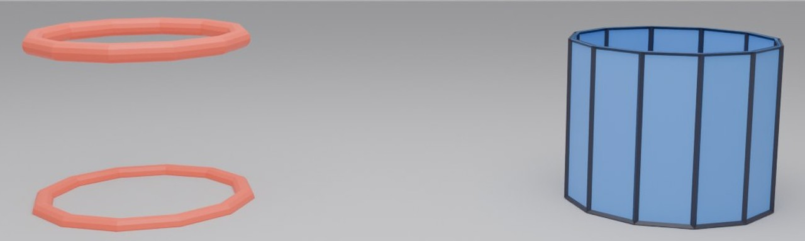

Bonus lesson
Bridge Edge Loops
Sometimes you have two separate pieces of a mesh and want to join them with a surface. The Bridge Edge Loops tool connects edge loops with faces. You find it in Edit Mode under the Edge menu: Edge ‣ Bridge Edge Loops.
1. Two loops in, one tube out

The manual's first example is exactly this: two closed edge loops as input, and a bridge result that fills the gap between them with faces.
2. The options
After you run the tool, the Adjust Last Operation panel shows its options. The manual lists these:
- Connect Loops: Open Loop connects loops with open ends. Closed Loop tries to connect to a circular loop, where the start and end are merged. Loop Pairs connects each even count of loops individually.
- Merge: merges the edge loops instead of creating new faces. Merge Factor sets which loop the edges merge to; 0.5 merges at a half-way point.
- Twist: decides which vertices in the two loops are connected to each other.
- Number of Cuts: how many intermediate edge loops are used across the distance between the two loops.
- Interpolation: Linear, Blend Path or Blend Surface, with a Smoothness setting for the blended modes.
- Profile Factor and Profile Shape: how much the new intermediate edges are shrunk or expanded, and the shape they follow. The manual points to the Proportional Editing page for the shapes.
3. What else it can do
The manual shows more examples: loops with different numbers of vertices, which Bridge can still connect; cutting holes in face selections and connecting them; and detecting several loops and connecting them in one step. Try these once you are comfortable with the basic case.
Read the manual page on Bridge Edge Loops.
Exercise
Add a UV Sphere. In Edit Mode and Face select mode, select one face on the top half and one on the bottom half (hold Shift to add the second), press X and choose Faces, so two holes appear. Switch to Edge select mode, Alt+click an edge of the first hole to select its loop, then Shift+Alt+click an edge of the second hole to add that loop (the manual lists these shortcuts on its Select Loops page). Now run Edge ‣ Bridge Edge Loops. A tunnel connects the two holes. Open the Adjust Last Operation panel and try Number of Cuts and Twist.